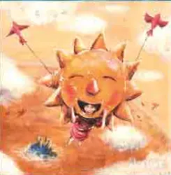
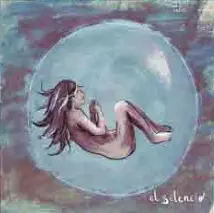
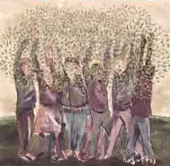
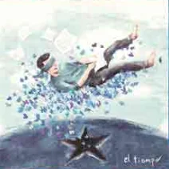
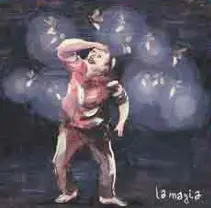
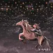
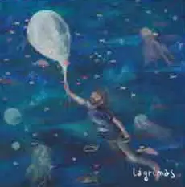
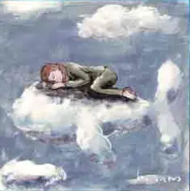

Manual Para Seres Maravillosos
Por Marta Ríos
"Manual para Seres Maravillosos" es el séptimo álbum de estudio de la aclamada banda española Maldita Nerea, lanzado el 3 de noviembre de 2023. Este proyecto discográfico se destaca por su profunda conexión emocional y su intrincado diseño conceptual, donde cada canción representa un ser maravilloso y un concepto único, reflejando así la complejidad y riqueza de la experiencia humana. Con la participación de Jorge Ruiz, líder de la banda, y la colaboración de Miguel Lamas en la producción, el álbum promete una experiencia auditiva única, manteniendo el característico sonido pop de la banda mientras explora nuevos horizontes musicales
Al explorar la profundidad emocional y el detallado concepto detrás de "Manual para Seres Maravillosos", es inevitable recordar el impacto que tuvo "El Secreto de las Tortugas", el álbum que marcó un antes y un después en la trayectoria de Maldita Nerea. La evolución desde aquel sonido inicial hasta la complejidad y madurez de "Manual para Seres Maravillosos" refleja no solo el crecimiento artístico de la banda sino también la evolución personal de sus miembros, liderados por Jorge Ruiz.
Reflexiones de Jorge Ruiz sobre 'Manual para Seres Maravillosos'
En una profunda conversación con La Opinión de Murcia, Jorge Ruiz de Maldita Nerea compartió sus pensamientos detrás de su último trabajo. Ruiz reflexionó sobre el amor como la "variable más maravillosa y pura", enfatizando que, a pesar de la falta de originalidad que él percibe en este mensaje, sigue siendo un pilar central de su propuesta musical. Destacó la intensidad del proceso creativo para este álbum, un esfuerzo que casi lo lleva al límite, pero del cual emerge orgulloso.
"Es un álbum diferente a todos por varios motivos. La característica principal sería que casi me rompo en el intento, pero conseguí terminar el disco, y estoy muy orgulloso de eso."
Las canciones de "Manual para Seres Maravillosos" no solo son una muestra de positividad, sino que también reflejan un cambio significativo en Ruiz, inspirado por los desafiantes últimos tres años. Estas experiencias personales y colectivas han dado lugar a un "cambio de piel" que se materializa a lo largo del álbum.
Además, Ruiz destacó la importancia de sentir sobre entender, especialmente cuando se trata de temas tan complejos y profundos como el amor. Esta filosofía se extiende a la estructura misma del álbum, donde cada canción, asociada a un concepto único y representada por un personaje, invita a los oyentes a una experiencia más intuitiva y emotiva.
"Estamos demasiado en entender las cosas, nos olvidamos de sentirlas, y el amor en concreto no es tan sencillo de explicar."
La entrevista completa ofrece una visión detallada de la mente detrás de "Manual para Seres Maravillosos" y se puede leer en La Opinión de Murcia.
Canciones del disco Manual Para Seres Maravillos
A continuación podrás encontrar el significado de cada una de las nuevas canciones del nuevo disco de Maldita Nerea.
- Inevitable
-
Esta pista representa un audaz experimento musical al abordar el amor desde una perspectiva infantil, algo poco común en la música pop actual. La inclusión de voces infantiles y su enfoque educativo la convierten en una pieza memorable que trasciende las barreras generacionales.
 - Madre
-
"Madre" se sumerge en la complejidad de las relaciones familiares, utilizando el silencio como metáfora del amor incondicional y el sacrificio. La canción destila una emotividad cruda que toca fibras profundas en el oyente, recordándonos la importancia de los lazos maternales.
 - Nosotros
-
Esta canción celebra la unión y la colectividad, resaltando cómo los lazos humanos nos fortalecen y definen. Con un arreglo musical que complementa a la perfección su mensaje, "Nosotros" es un himno a la solidaridad y al compañerismo.
 - Estabas Conmigo
-
Reflexiona sobre la presencia ausente de seres queridos que han dejado una marca indeleble en nuestras vidas. La canción navega por el dolor de la pérdida y la belleza del recuerdo, ofreciendo consuelo a través de la aceptación y la memoria.
 - Quiere
-
En "Quiere", Maldita Nerea explora las distintas facetas del amor, desde su inocencia hasta su complejidad. La pista destaca por su capacidad de capturar la esencia del sentimiento amoroso en todas sus manifestaciones.
 - Y Solo Arder y Duele
-
Estas canciones profundizan en el tema del desamor y la superación personal. Con una mezcla de melancolía y esperanza, ofrecen una mirada introspectiva a la resiliencia del espíritu humano ante la adversidad.
 - Lágrimas
-
"Lágrimas" es una oda a la vulnerabilidad y la fuerza que reside en expresar nuestras emociones más profundas. La canción es un recordatorio de que llorar no es signo de debilidad, sino de una profunda humanidad.
 - La Increíble Historia Entre Tú y Yo
-
Esta pista se destaca por su narrativa optimista, que celebra los encuentros fortuitos y las conexiones inesperadas que dan forma a nuestras vidas.
- Pintado Con Sueños
-
A través de esta canción, el álbum invita a los oyentes a perseguir sus sueños sin temor. Es un llamado a la acción para vivir con pasión y determinación, sin importar los obstáculos.
 - Te Prometo Libertad
-
Cierra el álbum con una promesa de liberación, tanto personal como colectiva. La canción es un himno empoderador que alienta a los oyentes a liberarse de las cadenas que restringen su potencial.
"Manual para Seres Maravillosos" no es solo un álbum; es un viaje emocional y filosófico que explora la esencia de lo que significa ser humano. Maldita Nerea nos ofrece un espejo en el que podemos vernos reflejados en nuestras alegrías, tristezas, esperanzas y sueños. Con cada pista, la banda nos invita a reflexionar sobre nuestra propia existencia y a celebrar la maravillosa complejidad de la vida.